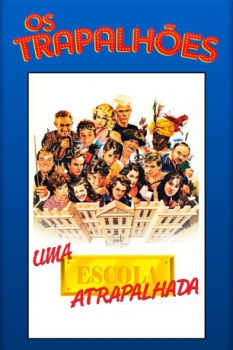

Uma Escola Atrapalhada (1990)


Avaliação (TMDb):


3.9/10 (19 votos)
Avaliação (Usuário):
País:Brazil, 90 minutos
Idiomas falados:Português
Gênero(s):Comédia, Família
Diretor(s):Del Rangel
Codec:MPEG-2 (DVD)
Número: 4381
Sinopse:
Sob a direção de Dona Alma e os olhares rigorosos do inspetor Anselmo, começa o ano letivo na Escola Mateus Rosée. A escola está passando por problemas financeiros, e Dona Alma expulsa um cobrador do prédio do colégio, afirmando que nunca irá vendê-lo. O pai de santo de Dona Alma espanta o cobrador.
Elenco:
Renato Aragão, Angélica, Supla, Dedé Santana, Mussum, Zacarias, Jandira Martini, Selton Mello, Gugu Liberato, Fafy Siqueira
Tipo de mídia: DVD5,
Legendas: Inglês, Espanhol, Português,
Alugado: Não
Tela: Anamorphic Widescreen